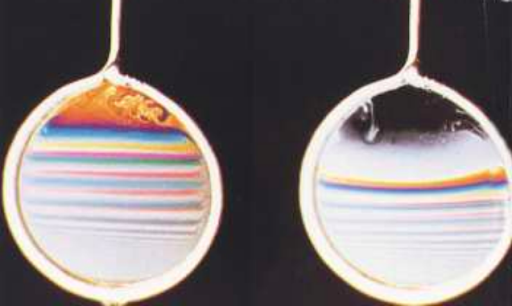

Wave Effects of Light
Thin Film Interference
When looking at oil spills, blowing bubbles, or angling a CD towards the light, we can see the spectrum on these objects. This occurs because light is being reflected by or transmitted through a thin film, which causes an optical interference, allowing us to see the colours of the rainbow. The definition of a thin film is essentially a very thin layer of a substance, usually found on a supporting material.
Interference
Before discussing how we can see the spectrum on the film, let’s talk about the path of the light waves. As shown in the image, the light is travelling through different mediums. When going from the first medium to the second medium, the light waves undergo a process ofpartial-reflection.This means that some waves are being reflected, while others are being transmitted into the film. In the second picture, you can see that the light isrefractedin the film, according to the index of refraction, and then the process of partial reflection occurs again when the light reaches the end of the second medium. Here the light wave is either transmitted to the first medium or reflected back into the second medium.
When being reflected or transmitted, the light can go through aphase shift.When passing through a slower medium, waves are shifted by180 degrees.But when passing into a faster medium, the waves are not shifted. Whether the two rays are in sync or not can also depend on the extra distance ray 2 travelled in the film.
Constructive/Destructive Interference (Reflection)
The first case of reflection with destructive interference can be seen in the picture. The thickness of the film is very thin (t<<λ), and the path difference, the extra distance travelled by the second ray, approaches zero. The crests and troughs are not occurring at the same time, as one of the rays is out of phase by 180 degrees, and as a result, destructive interference is caused, resulting in a dark spot.
In the second case, when the thickness of the film is λ/4, and the path difference is λ/2, both waves are in a 180 degree phase delay. They are in sync causing constructive interference. When the amplitude is doubled, we can see a bright area.
For our third case, when the thickness of the film is λ/2 and the path difference is lambda, destructive interference is caused as shown in the picture. Here we start to see a pattern where: Dark areas (2t) = 0, λ, 2λ; Bright areas (2t) = λ/2, 3λ/2, 5λ/
Constructive/Destructive Interference (Transmission)
So now, moving onto transmission. As you can see from the diagram below, (t<<λ) and thus ray 1 has no phase change, and ray 2 is reflected twice internally. This results in constructive interference as shown in the image.
As for the colours, it’s very important to note that transmission is opposite to reflection. Now, the bright areas are represented by the path difference (2t) = λ/2, 3λ/2 and so on; Dark areas (t) = 0, λ, 2λ...
Appearance
Gravity causes the film to be thin at the top and thick at the bottom, changing uniformly. Since it’s changing uniformly, there are horizontal segments switching between dark and bright spots. When a thin film is viewed under white light, you can see thespectrum.Spectral colours have different wavelengths, so the thickness of the film to provide constructive interference is different for each color.

Real-Life Applications
Some applications of thin films are Newton's rings, lenses and eyeglasses, and oil spills.
Click the button below to see Kaarthika's full presentation on Thin Film Interference!
View Slides!Diffraction Grating
Adiffraction gratingis a device whose surface is ruled with close, equidistant parallel lines. It’s purpose is to resolve light into spectra; transmission gratings are transparent while reflection gratings are mirrored.
To produce any kind of grating, fine lines can be ruled on a sheet of glass with a diamond tip. Intransmission gratingsthe spaces between the lines are where light transmits, while the lines themselves are opaque. When the ruled glass is used asreflection grating,the light shined on it is only reflected in the untouched segments.
If the light that is being shined on the grating is not monochromatic, but a mixture of various wavelengths, each separate wavelength produces bright interference patterns, with maxima that are narrow and widely separated.
Now that we understand what they are, we can come up with a relationship to describe diffraction gratings. The equation:
is used to govern diffraction gratings, where: d is the distance between adjacent gratings, and m (m = 0,1,2,3…) is the order of the bright line or maxima.
Polarization of light
What is polarized light? Let’s take the example of a polarizer, a circular lens that you can get for a camera. As you can see in the pictures below, the most important polarized light is to remove reflections. Polarizing the light can also help give a clearer and more saturated image.
Polarized light is produced through the use of filters, which selectively block the transmission of light waves. It can be a bit confusing, so here are some terms to understand before getting into the details. There are a few different types of polarization. There islinear polarization,also known as plane-polarized, where light is entirely polarized in one direction that is perpendicular to thedirection of propagation(which is the axis along which the wave travels). Then there are three ways that polarized light can be produced from unpolarized light, which areselective absorption, reflection, and scattering(occurs when light from the sun passes through the atmosphere and encounters small particles that scatter the light).
Real-Life Applications
Polarized light has many uses, including glare reduction, stress analysis in materials, sunglasses, the design and production of LCD displays, and photography.